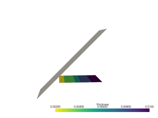
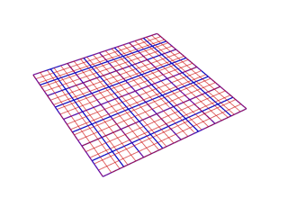

Examples#
ACP modeling features#
These examples show how to use PyACP for defining composite layups.

Rosette


Advanced selection rules
Direction definition
Thickness definition

Sandwich panel



HDF5 Composite CAE
Workflow examples#
These examples show how to combine PyACP with other tools to create a full simulation workflow.

Advanced PyMAPDL workflow
PyMechanical shell workflow

PyMechanical to CDB shell workflow
PyMechanical to CDB shell workflow
CDB to PyMechanical shell workflow
CDB to PyMechanical shell workflow
Use case examples#
These examples can serve as an inspiration for how you can tackle your own use cases with PyACP.